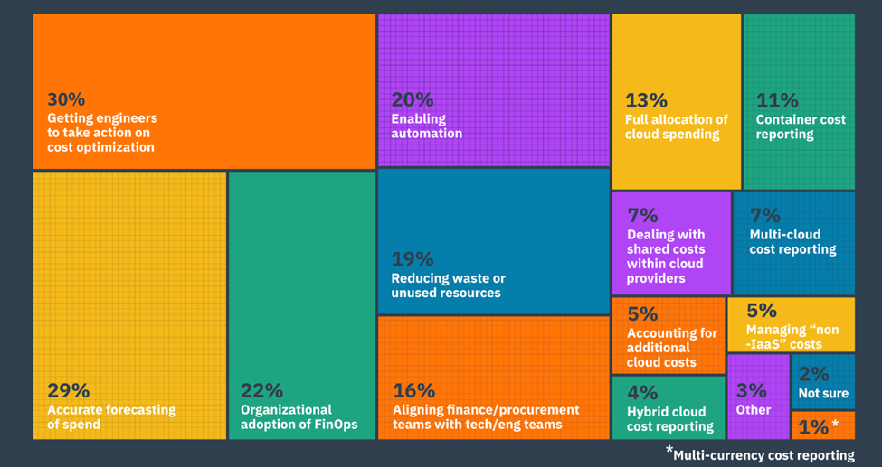
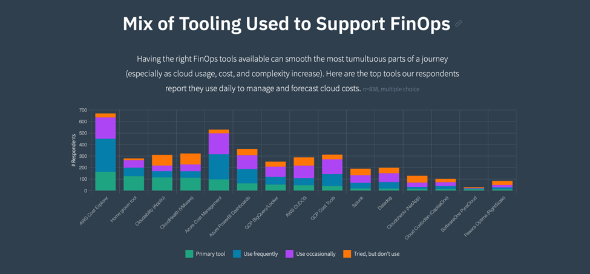
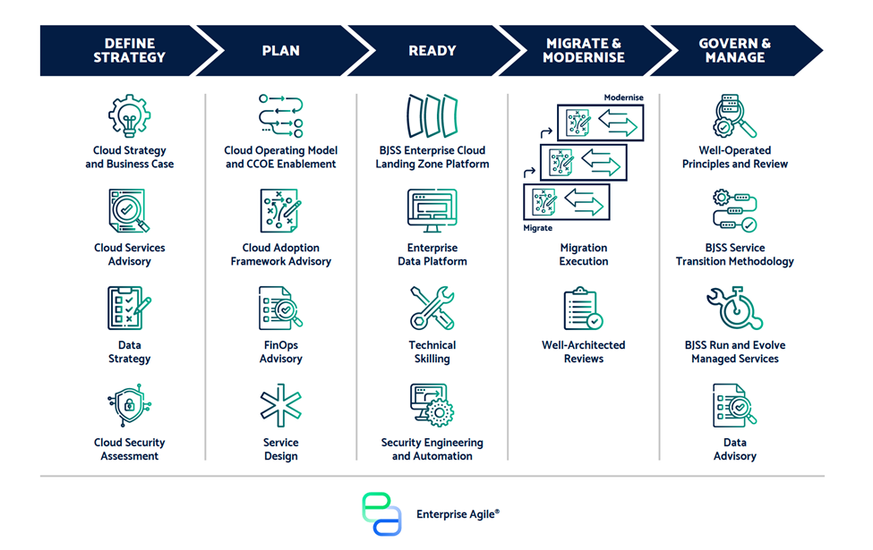

What is FinOps (and Why Does it Matter)?
FinOps is a cloud cost management model that seeks to foster communication and collaboration between business and engineering teams. J.R. Storment, author of Cloud FinOps, defines it as “the emerging professional movement that advocates a collaborative working relationship between DevOps and Finance, resulting in an iterative, data-driven management of infrastructure spending (i.e., lowering the unit economics of cloud) while simultaneously increasing the cost efficiency and, ultimately, the profitability of the cloud environment.” Or, you can say it is “the practice of bringing together Finance, Technology, and Business to manage the unit economics of Cloud for competitive advantage.” (FinOps Practitioner Certification course)
This is important because, no matter which definition you choose, in order to accurately identify the value obtained by each unit of cost, teams must collaborate, share information transparently, have a common language of FinOps, and each team must take ownership for their cost and usage of the cloud.
In a recent FinOps Foundation survey, participants ranked common FinOps challenges and the biggest challenge found (at 30%) was getting engineers to take action on cost optimisation. Through collaboration with the FinOps team, engineering teams are provided showback and chargeback reports and are introduced to cost as a metric in the same way that other performance metrics are tracked and monitored. This enables teams across the organisation to have visibility and metrics on their cloud cost management.
Fig1: Key FinOps Challenges, FinOps Foundation survey, 2022

The History of FinOps
The name FinOps arrived relatively recently into the spotlight in comparison to other cloud related terms. In the very early days of cloud, hyperscale cloud providers began using similar terms like “cloud cost management” and “cloud cost optimisation” to begin to explain best practices within cloud economics. (Cloud FinOps, 2020)
It was in 2012 in San Francisco when glimpses of FinOps practices became known with the likes of Adobe and Intuit. Soon after, other companies around the world including Qantas, Tabcorp, BP, and Sainsbury began to adopt this model. (Cloud FinOps, 2020)
One might even say the name FinOps was an homage to the term DevOps. J.R. Storment, who effectively defined FinOps as a practice, wrote that he crafted a definition of FinOps based on Gene Kim’s (author of The Phoenix Project) definition of DevOps. (Cloud FinOps, 2020)
Today, there has been much evolution in the field of FinOps. There is an average team size of five FinOps dedicated employees and an increase in FinOps practitioners beginning their FinOps journey. (FinOps Foundation survey, 2022)
How to lay the FinOps Groundwork in your organisation
Here are three things you can do to get a jumpstart on FinOps within your organisation:
1. Research stakeholders, pain points, and identify advocates
2. Create a plan and cultivate early stakeholders
3. Suggest first KPIs and present them to sponsors
Research stakeholders and identify advocates
Finding like-minded people who are looking to bring FinOps into your organisation is just as important as creating a FinOps plan or planning the KPIs. In fact, without this very first crucial step, the roadmap could fall apart. Look for people within Business: Product Owners, Finance: Finance Managers, Technology: Engineering Leads. In addition to finding advocates across the organisation, you will also need key senior level sponsorship moving forward like that of a CEO, CTO/CIO, CFO.
Understand pain points
Investigate pain points being experienced across the organisation i.e. lack of cost visibility within the business, fear of rampant cloud spending, and cloud costs breaking business cases.
Create a plan
Consider what the business future state might look like leveraging a FinOps model and what the benefit of having a FinOps function would be and work backwards from that. Ask where the FinOps function would “live” within the organisation and identify any necessary tool requirements to implement in the plan. There are a number of FinOps related tools being used for cloud resource optimisation, including: AWS Cost Explorer, Azure Cost Management, Azure PowerBI Dashboards, CloudHealth, and Cloudability to name a few. (FinOps Foundation survey, 2022) Fig2: Mix of Tooling Used to Support FinOps, FinOps Foundation survey, 2022

Suggest first KPIs and present them to sponsors
Identify KPIs that will be used to measure the FinOps function as well as ways to measure engagement and performance of stakeholders like business units and application teams. For example, consider an idle resource cost that will not exceed a certain percentage of total monthly cloud spend or an anomaly cost with a set threshold amount.
Seven Cost Optimisation Best Practices
Follow these seven (of many) best practices to get the most out of your FinOps Cloud Journey
- Right size your virtual machines to the required CPU, memory, storage, and network throughput
- Consolidate any idle compute resources or dev and test workloads that are no longer being used in order to optimise on cost
- Once you have right sized your workloads, consider the type of cloud usage i.e. predictable or variable usage and set a pricing model that fits those needs i.e. on-demand, reserved instances
- Consider any relevant server licensing benefit when moving to the cloud
- Configure autoscaling to dynamically provision compute resources based on demand
- Create and manage your cloud budgets using tools used to support FinOps
- Tag everything – use cost allocation to divide the cloud service provider bill across the organisation.
Examples of FinOps
Optimising Cost for NHS Test and Trace
The Department of Health and Social Care (DHSC)is the UK Government Department responsible for all policies on health and social care matters in England. Since the start of the Covid-19 pandemic, it has played a central role in the UK’s fight against the virus by introducing the Test and Trace service.
Together with the Department of Health and Social Care (DHSC) team, BJSS rolled out its Enterprise Cloud to speed up the delivery of the Azure and AWS-based cloud platform that now underpins NHS Test and Trace.
Against the backdrop of the public health response to the coronavirus pandemic, this programme needed to be delivered securely and at great speed, all while meeting the anticipated demands on the service. And while the DHSC and BJSS were successful in achieving those goals, it meant a later programme was required to further manage and optimise the use of cloud resources on the platform.
BJSS’ FinOps Advisory experts analysed the entire cloud platform, using the billing information to understand which accounts comprised the highest costs. From there, we understood where workloads were located, where there were underutilised resources, and where throughput was overprovisioned, among other things. We learned, for example, that 62% of costs were in six out of 70 accounts and over half of total cloud spend was on EC2.
As a result of this analysis, BJSS was able to recommend a suitable savings plan and implement optimisations to the architecture, including right-sizing for better utilisation, adopting AMD-based instances, and moving to container or serverless architecture. As a result, compute utilisation waste was reduced by 20%, resulting in around 30% in monthly savings.
What is your point-of-view on FinOps?
Why should your organisation be concerned with FinOps? Our view is that organisations were always aware of procurement costs of their IT estate for decades, but many never thought that it would be possible to dynamically allocate resources, when needed. Although, the route of how one allocates IT resource is very different today than it was three or four decades ago, there are even more tools and resources available today for organisations to, not only, have visibility of cloud costs, but to rationalise cloud costs and budgets as and when needed to establish unit economics.
Do I really need it?
No matter where you are on your FinOps journey - if you are just starting out or if your organisation has seasoned veterans in FinOps, we encourage you to learn more about the FinOps process and begin leveraging many of the best practices mentioned in this blog. To summarise, in this post, we showed you what FinOps is and why it should matter to you and your organisation, and we also shared the first three things you can do to initiate a FinOps practice in your organisation. Then, we shared the seven cost optimisation best practices that you can use to optimise your workload costs and control your cloud spending.
What We Offer
BJSS provides cloud migration consulting and delivery expertise to some of the largest and most complex organisations in the world.
BJSS’ five-step migration process can help you move your existing IT infrastructure to the cloud quickly, efficiently, and with minimal business interruption.
The whole process is underpinned by BJSS’ award-winning Enterprise Agile methodology. BJSS recognises the need for organisations to have a FinOps capability to align cloud cost to business objectives. Under the second step, Plan, includes a FinOps Advisory service to help you establish a FinOps capability and maximise the value of the cloud while reducing cost and increasing efficiency.
The BJSS FinOps Advisory team will help you design and unlock your Cloud FinOps model today. Book a FinOps Advisory session to discuss how FinOps can become a catalyst to manifest your business objectives.

Interested to learn more?
Find out more about our Cloud & Platform service here, or get in touch.